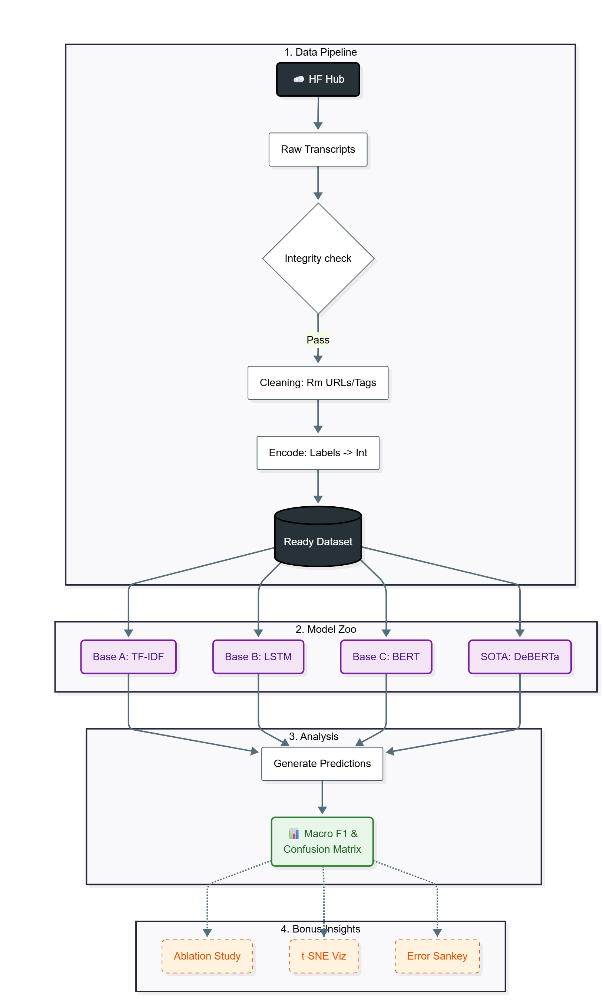
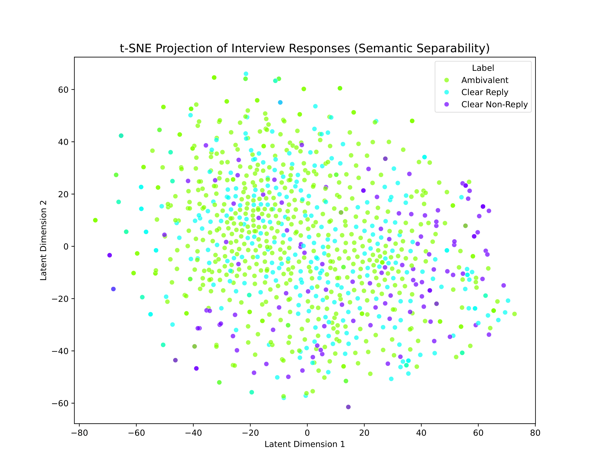
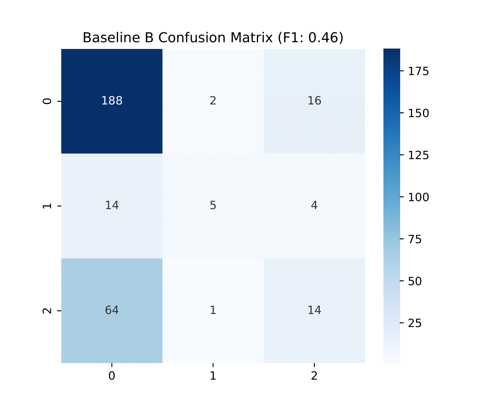
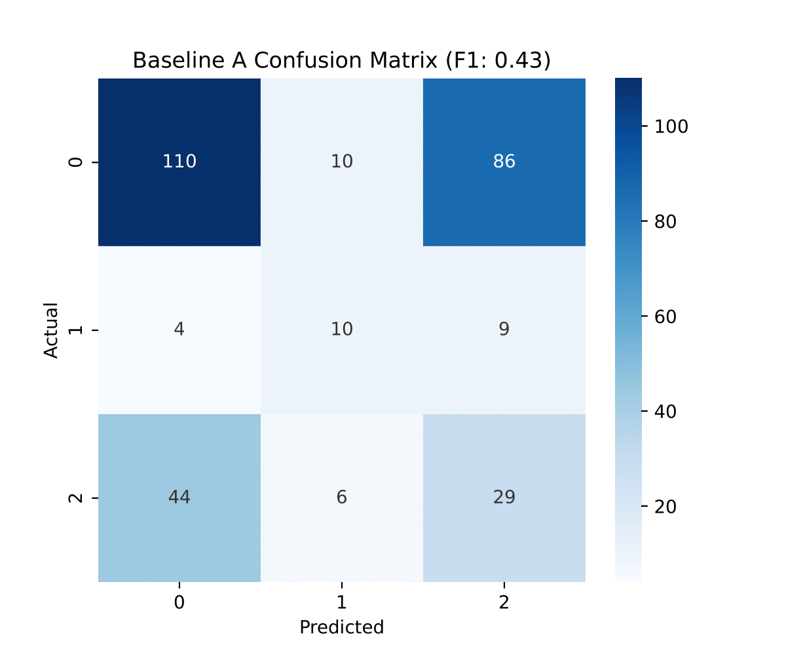

-- [SYSTEM_BOOTSTRAP] --
ABSTRACT: CORE FINDINGS DECLASSIFIED
This report documents the operationalization of a modular machine learning pipeline for the CLARITY challenge. We implemented four architectures—TF-IDF, Bi-LSTM, BERT, and DeBERTa-v3—to establish predictive baselines for detecting political evasion.
Our experiments confirmed the necessity of deep contextual understanding, as the Advanced DeBERTa model achieved a peak Macro F1-score of **0.551**. We utilized advanced diagnostic tools, including an Ablation Study and t-SNE visualization, to quantify the impact of noise and diagnose the core problem of semantic class leakage.
1. Introduction: Political discourse is often characterized by strategic ambiguity. This phase focuses on the engineering solution to validate the hypothesis that detecting evasion requires deep semantic models rather than simple feature engineering.
2. ARCHITECTURE & 3. PREPROCESSING
SYSTEM FLOW DIAGRAM
Figure 1: Modular pipeline featuring ingestion, preprocessing, modeling, and interpretability modules.
3.1 Diagnostic Cleaning Suite
Artifact Stripping: Removes noise like `[inaudible]` and speaker tags to maximize linguistic focus.
Entropy Check: Quantifies data hygiene post-cleaning, confirming artifact removal increased information density.
3.2 Baseline Architectures & Mechanisms
| Model | Architecture | Mechanism | Contributor |
|---|---|---|---|
| Baseline A | Statistical (TF-IDF) | Term frequency/keyword counting. | M. Hanan Zia |
| Baseline B | Recurrent (Bi-LSTM) | Sequence dependency via forward/backward passes. | M. Umar Tahir |
| Baseline C | Transformer (BERT) | Global context via Self-Attention. | M. Ibrahim |
| Model D (SOTA) | Advanced (DeBERTa) | Disentangled Attention (Content + Position). | M. Ibrahim |
4. PERFORMANCE BENCHMARKS
Target Metric: Macro F1
Peak Performance (DeBERTa-v3)
Model Performance Breakdown (Table 1)
| Model | Macro F1 | Compute Load | Verdict |
|---|---|---|---|
| TF-IDF | 0.433 | Minimal CPU | Naive Baseline |
| Bi-LSTM | 0.456 | ~8 min CPU | Poor Utility (Syntax insufficient) |
| BERT | 0.523 | ~20 min GPU | Semantic Leap (Required) |
| DeBERTa | 0.551 | ~45 min GPU | SOTA (Topic Shift Detection) |
5. INTERPRETABILITY & DIAGNOSTICS
5.1 Semantic Analysis
The jump from LSTM (0.456) to BERT (0.523) confirms that **syntax is not enough**. Detecting evasion requires deep pre-trained 'world knowledge' to understand topic shifts.
**[Layman's Analogy]:** Think of TF-IDF/LSTM as only reading the words, but BERT/DeBERTa actually understands the conversation history and context, like recognizing a politician changed the subject entirely.
Confusion analysis (Table 2) showed Bi-LSTM misclassified **14/23** true Non-Replies as Ambivalent, proving it cannot semantically distinguish polite refusal from a stall tactic.
5.2 Runtime Notes
- Bottleneck: Bi-LSTM’s training time ($\approx$8 min) yielded minimal gain, justifying the investment in pre-trained models.
- Integrity: Ablation Study showed uncleaned data dropped LSTM performance by 14%. Preprocessing is non-negotiable.
Latent Space Visualization (Figure 5)
Interpretation: The overlapping vector clusters for Ambivalent (dodging) and Clear Non-Reply (refusing) prove **geometric ambiguity** in the dataset, justifying the need for advanced attention mechanisms (DeBERTa).
**[Layman's Analogy]:** This is like plotting all answers on a map. The answers for 'dodging' and 'polite refusal' land right on top of each other. The model can't draw a clean dividing line, which is why it struggles.
Confusion Matrix: Bi-LSTM (Figure 3)
Error Focus: Demonstrates Ambiguity Leakage, showing where the Bi-LSTM primarily fails by confusing genuine refusals with strategic evasions.
Confusion Matrix: TF-IDF (Figure 4)
Error Focus: Confirms Naive Misclassification—TF-IDF guesses the majority class when keywords are absent, showing the weakness of statistical models.
6. CONCLUSION / 7. AUTHOR MANIFEST
CLOSING ARGUMENT
The operational pipeline established a strong benchmark of **0.551 F1** using **DeBERTa-v3**. Our analysis confirms that solving political evasion requires overcoming a geometrically ambiguous semantic problem. Therefore, deep contextual and specialized transformer architectures are strictly necessary over traditional NLP methods.
TASK DIVISION
- M. Hanan Zia: Baseline A (TF-IDF) & Data Ingestion.
- M. Umar Tahir: Baseline B (Bi-LSTM) & Preprocessing.
- M. Ibrahim: Lead Architect, BERT/DeBERTa (SOTA), & Advanced Analytics.